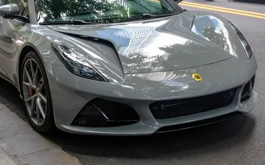
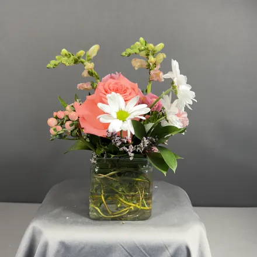
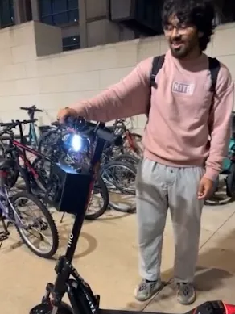
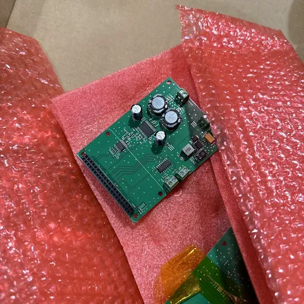
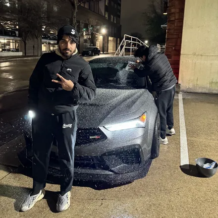
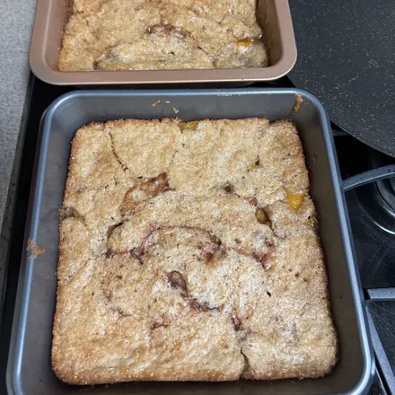

-
Tophat
A trading platform that runs a daily futures strategy across multiple
prop firm accounts, handling account lifecycles and drawdown rules.
Sold in 2026 for $50,000.

dream car photo: Ethan Llamas, CC BY-SA 4.0, cropped 
one of my arrangements -
Throttle Tune
A real-time engine sound simulator that gives an electric scooter four
different car engines, with the turn-signal buttons as paddle shifters.
Lock-free audio threads, pinned cores, and constexpr gear tables keep
latency unnoticeable, all running on a Raspberry Pi.

Ray & his scooter, caught off guard 
scooter PCBs -
Eclipse CLI
A terminal client for trading Solana memecoins, routing straight to Raydium
and Pump.fun. Its copy trader monitors trades from any wallet it's
watching and copies the trade before the original transaction even
gets confirmed, keeping up with private tools that sold for thousands
of dollars.

frozen & stranded 
world's best baker